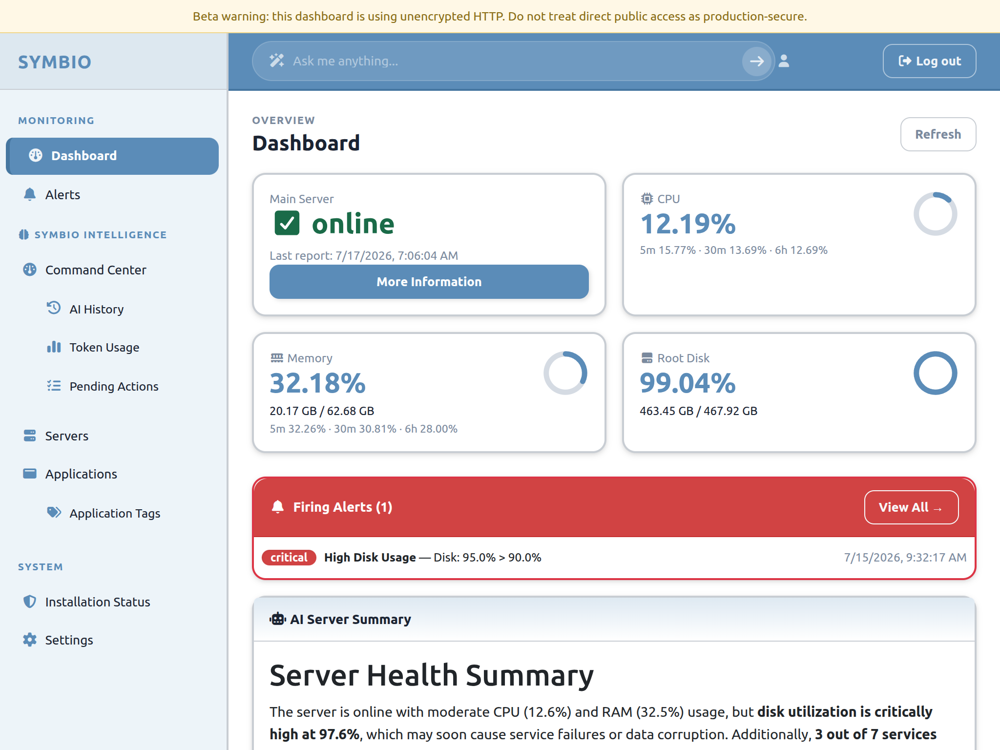

Private alpha for agency-managed web servers
SYMBIO
The operating layer for the servers behind your clients’ websites.
Host health, services, application checks, and logs stay together when an operator needs the full context.
Single-server alpha · Ubuntu hosts · Product actively evolving

01 A focused view of the system in front of you.
Context, kept close
The evidence behind a server issue, held in one place.
The alpha brings host state, service checks, application signals, logs, and response context into the same operator workspace.
-
01
Host health
Start with the machine: resource pressure, active processes, listening ports, packages, and Docker inventory.
Signals
- CPU and memory pressure
- Disk space and filesystem use
- Processes and listening ports
- Packages and Docker inventory
Investigates
Is the host itself the constraint, or should the investigation move into a service or application?
-
02
Services and applications
Compare service state, container state, HTTP probes, and the applications discovered on the host.
Signals
- System service state
- Docker container state
- HTTP probe results
- Applications and tags
Investigates
Is the public application unhealthy, or is an underlying dependency failing first?
-
03
Logs and investigation
Keep system and application evidence close to the signal that sent an operator looking.
Signals
- System and application logs
- Error evidence
- File and path inspection
- AI-assisted analysis
Investigates
Which available evidence gives the operator a credible next line of enquiry?
-
04
Alerts and response context
Keep alert events, diagnostics, notifications, and the operator record with the server.
Signals
- Alert rules and events
- Alert diagnostics
- Slack webhook notifications
- Skill history and pending actions
Investigates
What happened, who was notified, and what should the next operator review?
For the operator
A server issue should arrive with the context needed to act.
Symbio is a private alpha for the person responsible for a client server. It keeps the signal, the available evidence, and the next operator decision within the same working context.
-
01
Alert
Alert rules and Slack notifications surface failed checks and threshold conditions.
-
02
Inspect
Host state, services, containers, application checks, and logs stay connected to one server.
-
03
Interpret
AI-assisted analysis can help an operator work through the available evidence.
-
04
Review
Alert diagnostics, skill history, and pending-action flows preserve context for review and handover.
- Host
- One Ubuntu server
- Signals
- Services, HTTP, Docker, logs
- Notifications
- Slack webhooks
- Stage
- Private alpha
Private alpha
Symbio is taking shape with the teams closest to the work.
Follow the project to see the current build, its direction, and the work still ahead.
View Symbio on GitHub